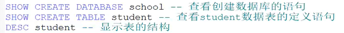
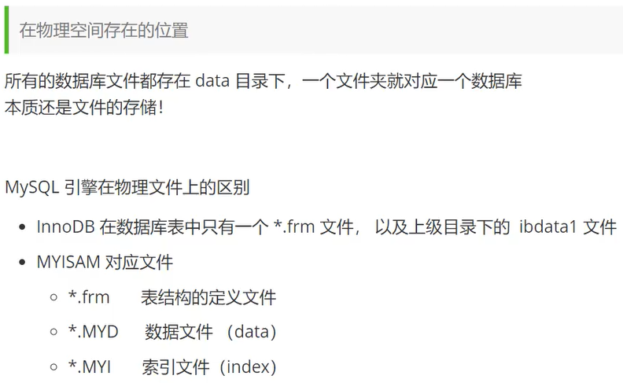
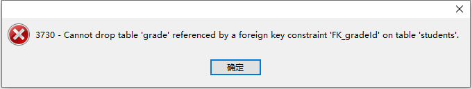
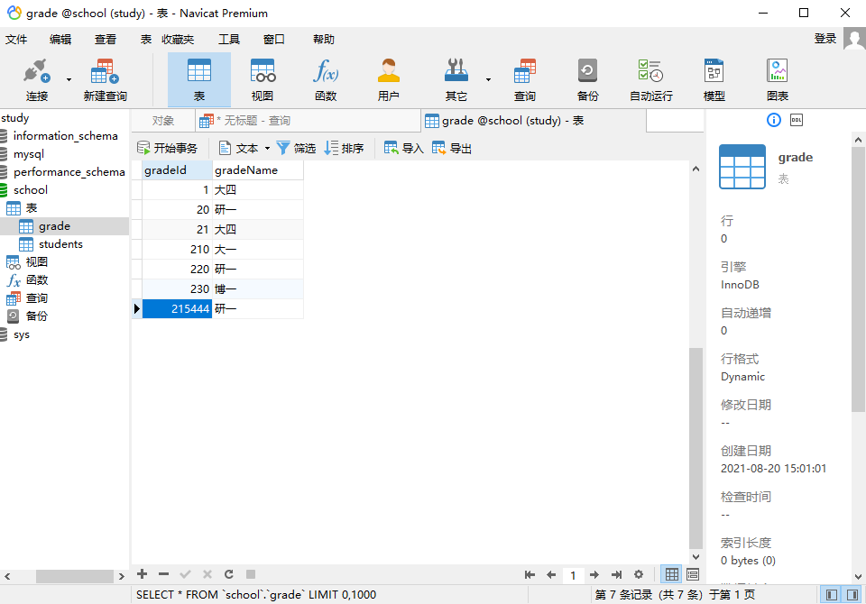
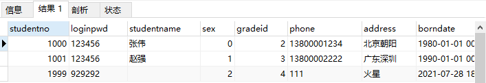
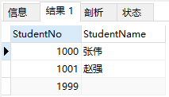
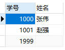
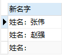
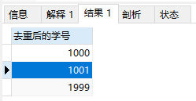
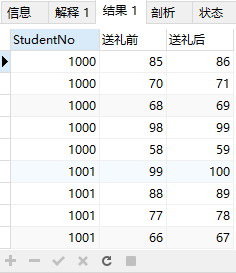

MySQL
预备知识
分类：
关系型数据库
非关系型数据库
💡简单使用
命令行连接数据库：
mysql -uroot -p123123 -- 连接数据库
flush privileges; -- 刷新权限
show databases; -- 查看所有的数据库
use school; -- 切换数据库,school为数据库名
show tables; -- 查看数据库中所有的表
describe student; -- 查看数据库中所有表的信息
create database westos; -- 创建一个名为westos的数据库
exit--退出
-- （SQL单行注释，注意"-- "后留有一个空格）操作数据库
不区分大小写。
操作数据库–>
操作数据库中的表–>
操作数据库中表的数据。
操作数据库
创建 数据库：create
CREATE DATABASE westos; CREATE DATABASE IF NOT EXISTS westos; -- IF NOT EXISTS 可选
删除 数据库：drop
DROP DATABASE westos; DROP DATABASE IF EXISTS westos;-- IF EXISTS 可选
使用 数据库：
USE `school`; -- 如果表名或者字段名是一个特殊字符，就需要用`` -- 例如：SELECT `user` FROM student;
数据库的列类型
数值
| 类型 | 字节 | 备注 |
|---|---|---|
| tinyint | 1 | 十分小的数据，性别、状态 |
| smallint | 2 | 较小的数据 |
| mediumint | 3 | 中等大小的数据 |
| int | 4 | 常用，标准的整数 |
| bigint | 8 | 较大的数据，对应 long |
| float | 4 | 浮点数 |
| double | 8 | 浮点数 |
| decimal | 2-17 | 字符串形式的浮点数，金融计算 |
字符串
| 类型 | 长度 | 备注 |
|---|---|---|
| char | 0~255 | 字符串固定大小 |
| varchar | 0~65535 | 可变字符串，常用，string |
| tinytext | 255 | 微型文本 |
| text | 65535 | 文本串 |
时间日期
| 类型 | 格式 | 备注 |
|---|---|---|
| date | YYYY-MM-DD | |
| time | HH:mm:ss | |
| datetime | YYYY-MM-DD HH:mm:ss | 常用 |
| timestamp | 时间戳，1970.1.1到现在的毫秒数 | |
| year | 年份 |
null
- 空，未知；
- 不要使用NULL进行运算。
数据库的字段属性
unsigned
- 无符号整数，该字段不能为负数。
zerofill
0填充，不足的位数补零；
例如长度为5的int，赋值为1，存储为00001。
自增
- 应用于整数，通常用于设计唯一的主键。自动在上一条记录的基础上+1(默认，可改，通常设置为唯一的主键，且必须是整数类型)。
非空 not null
- 设置成not null后，不赋值会报错。
default
- 默认值。

SQL创建数据库表
表名和字段尽量用``包裹，字符串使用单引号或双引号包裹，语句后加逗号。
PRIMARY KEY（主键）写在下面，一目了然。
CREATE TABLE if not EXISTS `student`(
`id` INT(4) NOT NULL AUTO_INCREMENT COMMENT '学号',
`name` VARCHAR(30) NOT NULL DEFAULT '匿名' COMMENT '姓名',
`pwd` VARCHAR(20) NOT NULL DEFAULT '123456' COMMENT '密码',
`gender` VARCHAR(2) NOT NULL DEFAULT '女' COMMENT '性别',
`birth` DATETIME DEFAULT NULL COMMENT '生日',
`address` VARCHAR(100) DEFAULT NULL COMMENT '家庭住址',
`email` VARCHAR(30) DEFAULT NULL COMMENT '邮箱',
PRIMARY KEY(`id`)
)ENGINE=INNODB DEFAULT CHARSET=utf8格式
CREATE TABLE [if not EXISTS] `表名`(
`字段名` 列类型 [属性] [索引] [注释],
`字段名` 列类型 [属性] [索引] [注释],
......
`字段名` 列类型 [属性] [索引] [注释]
)[表类型][字符集][表注释]注意：
- 逆向操作：可以通过
SHOW CREATE DATABASE xxx或SHOW CREATE TABLE xxx的方式得到对应的SQL创建语句。

MYISAM 和 INNODB 的区别
| MYISAM（早年使用） | INNODB（默认使用） | |
|---|---|---|
| 事务支持 | X | 支持 |
| 数据行锁定 | X | 支持 |
| 外键约束 | X | 支持 |
| 全文索引 | 支持 | X |
| 表空间大小 | 较小 | ≈2倍MYISAM |
- MYISAM 节约空间，速度较快
- INNODB 安全性高，支持事务处理，多表多用户操作
数据库依然是文件，一个数据库对应data目录下的一个文件夹。可以通过下面的命令找到data的位置
mysql> show ``global` `variables ``like` `"%datadir%"` `;INNODB引擎的数据表会生成.ibd文件，MYISAM引擎的数据库会生成.MYD/.MYI/.sdi三个文件。

修改删除表
- 修改表名：rename
ALTER TABLE teacher RENAME AS teacher1;
alter table student1 rename as teacher;
-- ALTER TABLE 旧表名 RENAME AS 新表名- 增加字段：add
alter table teacher add mon INT(11);
-- ALTER TABLE 表名 ADD 字段名 列属性- 删除字段：drop
alter table teacher drop money;
-- ALTER TABLE 表名 DROP 字段名- 修改字段名(及约束)：change，不是change d（x）
alter table teacher change mon money int(10);
-- ALTER TABLE 表名 change 字段名 修改名 约束修改
-- 不推荐使用CHANGE对约束进行修改- 修改字段约束：modify
alter table teacher modify mon varchar(11);
-- ALTER TABLE 表名 modify 字段名 约束修改- 删除表
drop table if exists teacher;
-- DROP TABLE [IF EXISTS] 表名数据管理
外键
方式一：
在创建表的时候，增加约束（比较麻烦）
CREATE TABLE IF NOT EXISTS `grade`(
`gradeId` INT(2) NOT NULL AUTO_INCREMENT COMMENT '年级id',
`gradeName` VARCHAR(30) NOT NULL COMMENT '年级名称',
PRIMARY KEY(`gradeId`)
)ENGINE=INNODB CHARSET=utf8
;
CREATE TABLE `students` (
`id` int(4) NOT NULL AUTO_INCREMENT COMMENT '学号',
`name` varchar(30) NOT NULL DEFAULT '匿名' COMMENT '姓名',
`pwd` varchar(20) NOT NULL DEFAULT '123456' COMMENT '密码',
`gender` varchar(2) NOT NULL DEFAULT '女' COMMENT '性别',
`birth` DATETIME DEFAULT NULL COMMENT '生日',
`gradeId` INT(2) NOT NULL COMMENT '学生年级',
`address` varchar(100) DEFAULT NULL COMMENT '家庭住址',
`email` varchar(30) DEFAULT NULL COMMENT '邮箱',
PRIMARY KEY (`id`),
-- ----------------------------------------------------------
KEY `FK_gradeId` (`gradeId`),
CONSTRAINT `FK_gradeId` FOREIGN KEY (`gradeId`) REFERENCES `grade`(`gradeId`)
-- REFERENCES 引用 references
) ENGINE=InnoDB AUTO_INCREMENT=2 DEFAULT CHARSET=utf8删除有外键关系的表的时候，必须要先删除引用别人的表（从表），再删除被引用的表（主表）。

方式二：
👍推荐使用。
创建表成功后，添加外键约束。
CREATE TABLE IF NOT EXISTS `grade`(
`gradeId` INT(2) NOT NULL AUTO_INCREMENT COMMENT '年级id',
`gradeName` VARCHAR(30) NOT NULL COMMENT '年级名称',
PRIMARY KEY(`gradeId`)
)ENGINE=INNODB CHARSET=utf8
;
CREATE TABLE `students` (
`id` int(4) NOT NULL AUTO_INCREMENT COMMENT '学号',
`name` varchar(30) NOT NULL DEFAULT '匿名' COMMENT '姓名',
`pwd` varchar(20) NOT NULL DEFAULT '123456' COMMENT '密码',
`gender` varchar(2) NOT NULL DEFAULT '女' COMMENT '性别',
`birth` DATETIME DEFAULT NULL COMMENT '生日',
`gradeId` INT(2) NOT NULL COMMENT '学生年级',
`address` varchar(100) DEFAULT NULL COMMENT '家庭住址',
`email` varchar(30) DEFAULT NULL COMMENT '邮箱',
PRIMARY KEY (`id`)
) ENGINE=InnoDB AUTO_INCREMENT=2 DEFAULT CHARSET=utf8
-- ----------------------------------------------------------
ALTER TABLE `students`
ADD CONSTRAINT `FK_gradeId` FOREIGN KEY(`gradeId`) REFERENCES `grade`(`gradeId`);
/*
ALTER TABLE 表
ADD CONSTRAINT 约束名 FOREIGN KEY(作为外键的字段) REFERENCES 主表名(主表字段);
*/注意
上面的操作都是物理外键，数据库级别的外键，相互有关联，不建议使用。避免数据库过多造成困扰。
数据库就是单纯的表，只用来存数据，只有行（数据）和列（字段）。
想用多张表的数据，使用程序去实现外键的使用。
💡DML语言
DML语言：
- insert
- update
- delete
添加
insert into 表名([字段1,字段2,字段3,……]) values ('值1','值2','值3'，……),('值1','值2','值3'，……),('值1','值2','值3'，……),……
-- ------插入一条数据-------------------------------------------
insert into `grade`(`gradeId`,`gradeName`) values ('215','研一');
-- ------插入多条数据-------------------------------------------
insert into `grade`(`gradeId`,`gradeName`) values ('210','大一'),('220','研一'),('230','博一');如果表名（如grade）后不写字段（如(gradeId,gradeName)），表示要填充全部字段：
后面填写的
values需要对应表名省略的字段的个数，否则会报错。
insert into `grade` values ('215','研一');
修改
-- update 表名 set 字段=新值,字段=新值,... where [条件]
update `students` set `name`='shgxy' where id = 212;条件是用于定位需要修改的记录的，不指定条件时会修改所有记录。
如果要修改多个属性，在SET后逗号隔开写：
UPDATE `grade` SET `id`=220,`gradeName`='研一' WHERE `id`=212;VALUE不一定是具体的值，也可以是诸如CURRENT_TIME之类的变量
WHERE子句
| 操作符 | 含义 |
|---|---|
| = | |
| <> 或 != | 不等于 |
| > | |
| < | |
| >= | |
| <= | |
| and | |
| or | |
| between A and B | 可以用 >=A and <=B 代替 |
删除
-- DELETE FROM 表名 [WHERE 条件]
delete from `students` where id = 111;WHERE子句用于指定要删除的记录，缺省为删除全部记录。
但是清空数据库表建议使用TRUNCATE，TRUNCATE会重新设置自增列(计数器归零)，不会影响事务。
作用：完全清空一个数据库表，表的结构和索引约束不变。
truncate：删节，重新设置 自增列 计数器会归零。
delete from 表名; -- 不会影响自增
truncate table 表名; -- 自增会归零🔴DQL查询数据
Data Query Language：数据查询语言
查询某字段的全部记录
查询表的全部信息
select * from 表名

查询指定字段
select `StudentNo`,`StudentName` from student;

别名，使得查询的指定字段在显示时换一个名称，别名不需要引号。也可以给表起别名
select `StudentNo` as 学号,`StudentName` as 姓名 from student;

✔
Concat函数：在查询结果中拼接字符串select concat('姓名：',StudentName) as 新名字 from student;
去重
select distinct `StudentNo` as 去重后的学号 from student;
select其他操作
select version(); -- 查询mysql版本 select 3*5 as 计算结果; -- 用来计算 select @@auto_increment_increment; -- 查询自增步长 select `StudentNo`,`StudentResult` as 送礼前,`StudentResult`+1 as 送礼后 from `result`; -- 将选到的记录修改后显示
where检索符合条件的记录
逻辑运算符
and / or / not
&& || !
比较运算符 – 模糊查询⭐
is null
is not null
between 必须左小右大
like
like后面是一个字符串，
%表示匹配任意多个字符，_表示匹配一个字符
select * from student where `studentname` like '张%';-- 查询姓张的同学
select * from student where `studentname` like '%强%'; -- 查询名字中有强的同学in
查询1001,1002,1000三个
select * from student where `studentno` in (1001,1002,1000)联表查询

联表查询要确定交叉点，即两个表中什么字段是相同的
select S.`studentno`,`studentname`,`subjectno`,`studentresult`
from `student` S-- 别名是S，AS可以省略
INNER JOIN `result` R-- 别名是R
ON S.`studentno`=R.`studentno`左右连接的”左”和”右”其实就是书写的顺序，写在前面的就是左，写在后面的就是右。
以左连接为例如果A LEFT JOIN B，那么连接的结果中，A中的记录都会显示出来，无论B中有没有对应的记录。
多表查询实例
select S.`studentno`,`studentname`,SUB.`subjectname`,`studentresult`
from `student` S
RIGHT JOIN `result` R
ON S.`studentno`=R.`studentno`
INNER JOIN `subject` SUB
ON SUB.`subjectno`=R.`subjectno`联表查询的核心在于：
- 要查哪些数据=>SELECT
- 从哪几个表中查=>FROM ，JOIN ON
- 本文链接：https://shgxy.github.io.git/2021/08/19/MySQL/
- 版权声明：本博客所有文章除特别声明外，均默认采用 许可协议。